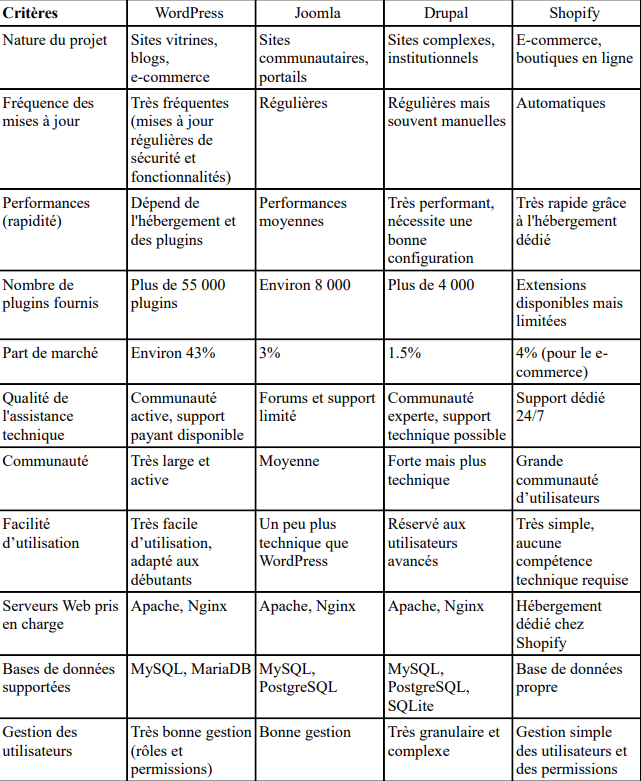

Avant d'utiliser pour la première fois un CMS, il a fallu comparer les différences entre les plus utilisés du marché.
Nous les avons donc comparés sur différents critères tels que la nature du projet, la fréquence des mises à jour, le
nombre de plugins disponibles, la qualité de l'assistance, la communauté, la facilité d'utilisation...